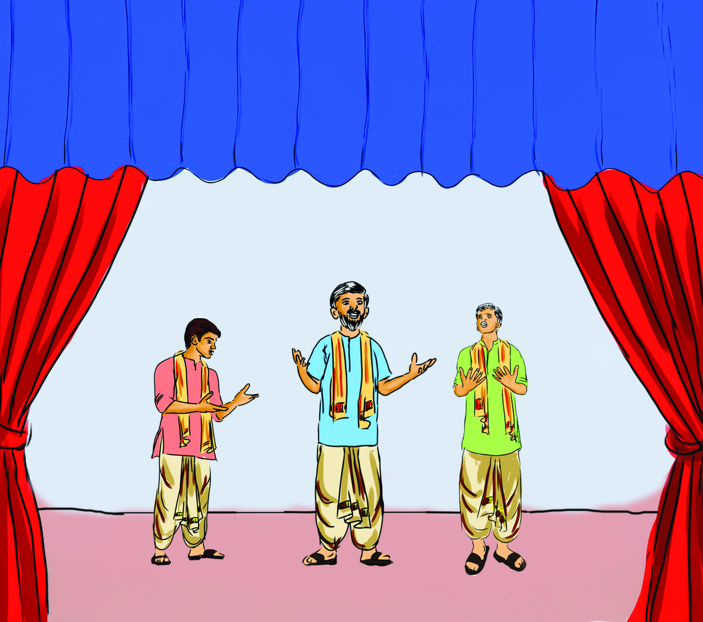
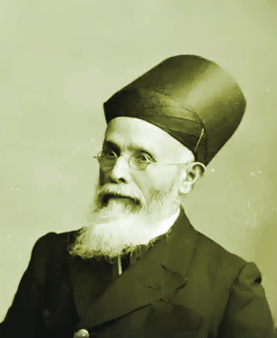
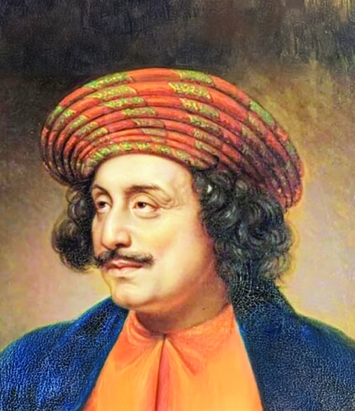
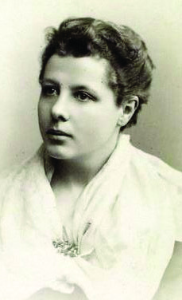

Nobin Madhab
Golok Chunder Basu
Sadhu Churn
Yes, What Nobin said
is right. We have been
silent for too long.
Our ancestors ask us to
break these chains.
We can fight together
for our freedom and for
our future generations.
Fig. 2.1 l
Towards the
Emergence of the
National Movement
2
Unit
Father, how long will we
endure this tyranny?
The neelam landlords
have made us mere
slaves on our own land.
We have to wake up and
fight for our rights.
My son, our sufferings are great.
But our unity is greater than that.
The time has come for us to stand
together not only as farmers but
also as a nation. We are not weak.
We must show the world that we
can resist and reclaim our dignity.
Page 27

Page 28


28
Social Science
Standard
Did you listen to the conversation given above ? This
is a part of the play Nil Darpan written by Bengali
literary and social reformer Dinabandhu Mitra. The
characters speak against the exploitation of the indigo
plantation owners, which we discussed in the previous
chapter. They highlight the need for Indians to stand
together against the exploiters. What can be learned
from this conversation?
l The need to fight against foreign tyranny
l Emancipation from economic exploitation
l
Before independence, India was divided into many
princely states. Segregation existed in all spheres like
caste, religion, dress, language and culture. But in the
second half of the nineteenth century, beyond all such
differences, a sense of unity emerged among Indians.
A strong anti-British feeling was the basis of this sense
of unity of the Indian people. This sense of unity is
called Nationalism. Let us examine the circumstances
that led to strengthen Indian nationalism.
Economic Policy
We had discussed earlier the capture of various princely
states in India by the British and the economic policies
implemented by them. India had become a colony for
the collection of raw materials for the British industries
and also a market for the British products. Economic
exploitation was the aim of the British. The policies
adopted by them for this led to unemployment and
poverty in India. As a result, various categories like farmers,
artisans, small traders and tribal communities started
fighting against the British. Dadabhai Naoroji, R. C. Dutt,
and Mahadev Govind Ranade carried out detailed studies
about the economic exploitation by the British. They were
the early leaders of the Indian National Movement.
The Grand Old
Man of India
Fig. 2.2 l Dadabhai Naoroji
Poverty and Un-British
Rule in India is a book
by Dadabhai Naoroji
who is known as the
‘Grand Old Man of
India’. In this book
he presented his
observation that the
British were draining
away the wealth of
India (Drain theory).
Thus the economic
consequences of
British rule became a
subject of discussion.
Page 29

29
Towards the Emergence of the
National Movement
Fig. 2.4 l
R. C. Dutt
Fig. 2.3 l
Mahadev Govind Ranade
Western Education
Modern education spread in India at the beginning of the
nineteenth century. English education was propagated
by the British to highlight their superiority, to subjugate
Indians culturally, and mould a section of Indians who would
be sympathetic to them. But the English educated Indians
became conscious of democracy, freedom, egalitarianism,
equal justice, scientific temper and civil rights.
Indians who got acquainted with these new ideas wondered
how their country came under the British rule. They
constantly talked about the need to end the British rule.
English became the common language of exchange of ideas
for people coming from different parts of the country.
Western education helped Indians to understand about the
economic and social weaknesses of the country. This led to
the emergence of nationalism.
How did western education help in developing
nationalism among Indians?
Discuss and prepare notes.
Literature and Newspapers
Literary works and newspapers played an important role
in spreading nationalism in India. The protest against the
British had reflections in literature. The sufferings, neglect
and exploitation faced by the people in different parts of
the country became themes in literary works. The works
of prominent writers of that time like Dinabandhu Mitra,
Bankim Chandra Chatterjee, Rabindranath Tagore, Vallathol
Narayana Menon, and Subramania Bharati played an
important role in inculcating nationalism among the people.
Major national literary figures
Language
l Bankim Chandra Chatterjee
l Rabindranath Tagore
l Bengali
l Lakshminath Bezbaruah
l Assamese
l Vishnushastri Chiplunkar
l Marathi
Page 30

30
Social Science
Standard
l Subramania Bharati
l Tamil
l Bharatendu Harishchandra
l Premchand
l Hindi
l Altaf Hussain Hali
l Urdu
l Vallathol Narayana Menon
l Malayalam
Many newspapers in English and regional languages came
into existence at that time. The social reformer Raja Ram
Mohan Roy pioneered journalism in India. The newspapers
he started were Sambad Kaumudi in Bengali and Mirat ul-
Akbar in Persian. Such newspapers were able to respond and
criticise the British policies, and patronise a critical mindset
against exploitation. Listed below are some important
newspapers which played a decisive role in the development
of modern ideas and nationalism.
News Paper
Language
Amrita Bazar Patrika
Bengali
The Hindu
English
The Times of India
Mathrubhumi
Malayalam
Al Ameen
The British saw the newspapers as a weapon of propaganda
against them and took measures to control them. Important
among these is the Vernacular Press Act enacted by Lord
Lytton. Indian people stood united against such laws.
Prepare a short description on ‘The Role of Press
in Developing Nationalism.’
Social Reform Movements
Modern education helped to realise the need to eliminate
false beliefs and superstitions that prevailed in society.
Fig. 2.7 l Rabindranath Tagore
Fig. 2.5 l Dinabandhu Mitra
Fig. 2.8 l Vallathol Narayana Menon
Fig. 2.9 l Subramania Bharati
Fig. 2.6 l Bankim Chandra Chatterjee
Page 31


31
Towards the Emergence of the
National Movement
Let us examine the early reformers in India and their
activities.
Raja Ram Mohan Roy
Raja Ram Mohan Roy initiated social reforms in India.
Born in Bengal in 1772, he had profound knowledge in
Hinduism, Islam, Christianity, and Judaism. Roy was a
multilingual scholar, influenced by the ideals of French
Revolution.
Major social reforming activities of Raja Ram Mohan
Roy are listed below.
Fig. 2.10 l Raja Ram Mohan Roy
He played a crucial role
in abolishing Sati.
Started many schools
to impart modern
education.
Started
a social reform
movement called
Brahma Samaj.
Argued that
women have the
right to inheritance.
Stood against idolatry
and polytheism.
Fought against
social evils like child
marriage and
polygamy.
Jyotirao Phule
Jyotirao Phule was a social reformer who fought for the
rights of people who were considered lower caste in
Maharastra and for the women. He formed an organisation
named Satyashodhak Samaj for social reformation. This
organisation made efforts for widow marriage and to
provide protection to children of widows. He established
many educational institutions for Women and Dalits. The
people of Maharashtra respectfully called him ‘Mahatma.’
His life partner Savitribai Phule also accompanied him in
all his activities. Savitribai also participated in educational
activities by establishing several schools for girls and night
schools.
Fig. 2.11 l
Jyotirao Phule
Page 32

32
Social Science
Standard
Pandita Ramabai
Pandita Ramabai was a feminine presence in the field of
social reforms. A native of Karnataka, Ramabai mastered
languages such as Sanskrit, Marathi and Bengali. Ramabai
was honoured with the title of ‘Pandita’ by the teachers of
the University of Calcutta for her Knowledge in Sanskrit
literature.
Pandita Ramabai fought against child marriage and started
several schools for the education of widows and girls. An
organisation called ‘Arya Mahila Samaj’ was established for
such activities. A shelter called ‘Sharada Sadan’ was started
for the rehabilitation of widows and a project called Mukti
Mission was started to provide vocational training for
women. She participated in the conference of the Indian
National Congress held in Bombay in 1889.
Fig. 2.12 l
Pandita Ramabai
Prepare a note analysing the activities of Raja Ram Mohan Roy,
Jyotirao Phule and Pandita Ramabai.
Let us familiarise ourselves with some other important
social reform movements of India and their founders.
Social reform movements
Founders
Prarthana Samaj
Atmaram Pandurang
Arya Samaj
Swami Dayananda Saraswati
Aligarh Movement
Sir Syed Ahmad Khan
Theosophical Society
Madame Blavatsky, Colonel Olcott
Ramakrishna Mission
Swami Vivekananda
Hitakarini Samaj
Veeresalingam Pantulu
Swabhimana Prasthanam
E. V. Ramasamy Naicker
Sree Narayana Dharma Paripalana Yogam Sree Narayana Guru
Sadhujana Paripalana Sangham
Ayyankali
Page 33

33
Towards the Emergence of the
National Movement
Through social reform activities, the self-confidence of
Indians grew and this led to the growth of nationalism.
Transport and Communication
The British expanded transport and communication facilities
in India for trade, industry, and military purposes. They
started the railways, postal system, and telegraph services.
They also improved the road transport system to ease the
movement of goods. These facilities helped people to travel
to all parts of India, communicate and understand each
other. In this way, the idea of nationlism emerged and the
national movement strengthened. The implementation of a
unified administrative system, legal system, and currency
system also created a sense of unity among the people.
Prepare a seminar paper on the topic ‘Factors that contributed to the
growth of Indian nationalism.’
Indicators
l economic policy
l western education
l social reform movements
l transportation and communication
l literature and newspapers
Early political
movements
Centre of
activity
National leaders who led
the movements
Indian Association
Calcutta
Surendranath Banerjee,
Ananda Mohan Bose
Madras Mahajan Sabha
Madras
M. Veeraraghavachariar,
G. Subramania Iyer,
Ananda Charlu
Bombay Presidency
Association
Bombay
Pherozeshah Mehta,
K. T. Telang,
Badruddin Tyabji
Formation of Political Organisations
The opinion that organisations should be formed to unite the people against the
British emerged from different parts of India. As a result, new political organisations
were formed in the second half of the nineteenth century. Some of them are given
below.
Page 34


34
Social Science
Standard
Discuss and list the limitations of early political
movements.
What have you learned regarding the formation of the Indian National
Congress?
l Indian National Congress was formed in 1885.
l
l
On December 28, 1885, at 12 noon, a meeting was held in a spacious
room at the Gokuldas Tejpal Sanskrit College, Bombay. Seventy-two
persons had assembled there. They had worked as representatives of
some important organisations in different regions of India. They were
different personalities in terms of language, religion and recognition
in society... One of the organisers was an Englishman, Allan Octavian
Hume. W. C. Banerjee, a lawyer, presided over the meeting that day.
Courtesy: KSICL, History of National Freedom Struggle for Children
Fig. 2.13 l The participants of the first Indian National Congress
These organisations were not an all India by nature. Their
activities were confined to certain provinces and territories.
Such organisations led by the rich and the middle class
failed to create awareness among the masses politically. In
this context, the need to form an all-India organisation was
strengthened.
Formation of All India Organisation
The historical conference that launched the Indian National
Congress is described above.
Page 35


35
Towards the Emergence of the
National Movement
Fig. 2.14 l
Allan Octavian Hume
Fig. 2.15 l
W. C. Banerjee
The first Malayali
who became the
President of the
Indian National
Congress. He
presided over
the Amaravathi
Congress in 1897.
Sir. C
Sankaran
Nair
Fig. 2.16 l
“Bengal united is a power, Bengal divided
will put in different ways. This is the feeling
of congress leaders. This is one of the merits
of the scheme of the partition of Bengal. One
of the main aims is to split up and thereby
weaken a solid body of opponents to our rule.”
H.H. Risley
Courtesy: KSICL, History of National Freedom
Struggle for Children
The early objectives of the Indian National
Congress helped to develop a sense of
nationalism in India. Discuss.
The main objective of this conference was to form a general
opinion among the social and political activists from different
regions. The declared objectives of the Indian National
Congress are given below.
l To foster friendly relation among political activists in
different parts of India.
l To foster and strengthen a sense of national unity
irrespective of caste, religion and province.
l Formulate and give shape to common needs and present
them to the British Government.
l Form a public opinion and organise people in the country.
l Allow centres in India for All India Competitive
Examinations as well.
Every year in December, the annual conference of the Indian
National Congress was held in different parts of the country.
The important leaders of that time were Dadabhai Naoroji,
Surendranath Banerjee, Pherozshah Mehta, Badruddin
Tyabji, Gopalakrishna Gokhale, Balagangadhara Tilak, P.
Ananda Charlu, R. C. Dutt and Ananda Mohan Bose.
Partition and Division
Page 36

36
Social Science
Standard
You have read the description of an official note written
by Risley, the Home Secretary of the Government of India,
explaining the objective of the partition of Bengal.
The British authorities devised various strategies to weaken
the Congress-led struggles. The most important of these
was the Partition of Bengal. The aim was to divide the
province of Bengal into two which was the stronghold of
the nationalist movement. Lord Curzon, the British Viceroy,
argued that the existing province of Bengal was vast and
partition was necessary for efficient administration.
Partition of Bengal
Bengal was divided into East Bengal and West Bengal.
East Bengal was a Muslim-majority region and West
Bengal was a Hindu-majority region.
What was the real motive behind the partition of Bengal?
l
On October 16, 1905, when the partition was effected,
mourning was observed throughout Bengal. A hartal was
observed in Calcutta. People also gathered in the streets
singing the patriotic song ‘Amar Sonar Bangla’ composed by
Rabindranath Tagore. These protests turned into a massive
strike. This is known as the ‘Swadeshi Movement.’ The
Indian National Movement was energised by the Swadeshi
Movement.
The main mode of struggle of this movement was the use of
Indian goods and the boycott of British goods. ‘Self-reliance’
was the main concept of the Swadeshi Movement. The meaning
and purpose of the Swadeshi Movement was to promote the
success of Swadeshi industries and other enterprises, which
meant boycotting British products and thus depriving the
government of trade revenue. As part of this,
l Many textile mills, soap factories, match factories,
handloom establishments, national banks and insurance
companies were started.
Page 37


37
Towards the Emergence of the
National Movement
l Bengal Chemical Store started by Acharya P. C. Roy,
Swadeshi Store started by Rabindranath Tagore, the
Swadeshi Steem Navigation Company started under the
leadership of V. Chidambaram Pillai and the Steel Factory
established by Jamshedji Tata were formed as part of the
Swadeshi Movement.
Surendranath Banerjee's description of the Swadeshi
Movement is given below.
‘In the days of strength, the Swadeshi
movement coloured the fabric of our
social and domestic life. Wedding presents
comprising foreign materials which could be
made in India were returned. Priests often
objected to officiating at ceremonies in which
things were offered to the gods. Guests refused
to participate in celebrations where foreign
salt and sugar used.’
Courtesy: Bipan Chandra, Modern India
Fig. 2.17 l
Surendranath Banerjee
List the facts that can be gleaned about the Swadeshi Movement from
this description.
l wedding gifts which included foreign objects were returned
l
Such campaigns created awareness of the ideas of the
Swadeshi Movement and had a great influence on the Indian
people. Through this, the common people, women and
students of India became participants in a political movement
for the first time. The influence of this movement was felt in
the fields of culture, education, economy and politics.
The Swadeshi Movement was able to spread the Indian
freedom movement at the national level and contribute the
Swadeshi as a new way of freedom struggle. The Swadeshi
Movement brought the national struggle closer to the
common people.
Page 38


38
Social Science
Standard
Swadeshi Samitis were
voluntary organisations
that worked to spread the
message of the Swadeshi
Movement and organise
the people. The Swadeshi
Bandhab Samiti formed
by Ashwini Kumar Dutt is
important here.
l Provide physical
training to volunteers.
l Help those who suffer
from epidemics and
other ailments.
l Establish Swadeshi
Vidyalayas.
These were their main
objectives.
Swadhesi
Samitis
Fig. 2.18 l Ashwini Kumar Dutt
Prepare a seminar paper on the topic ‘The
influence of Swadeshi Movement in the
Indian freedom struggle.’
Moderates and Extremists
There were differences of opinion among the leaders
regarding the working methods of the Indian National
Congress. The early leadership was not ready for an
open struggle against the British. They were known
as moderates. Chief among them were Pherozshah
Mehta, Gopalakrishna Gokhale and Dadabhai Naoroji.
They propagated their ideas through peaceful
and bloodless struggles, meetings, speeches and
resolutions.
Another group, dissatisfied with the ideas and
activities of the moderates, became strong in the
Congress. They were known as extremists. Bal
Gangadhara Tilak, Bipin Chandra Pal and Lala Lajpat
Rai were prominent among them. Their mode of action
was quite different from those of the moderates.
They adopted revolutionary methods of action like
swadeshi and boycott to argue that freedom could be
achieved only through strong open struggle.
Compare the working methods of the
moderates with that of the extremists
in the Indian National Movement and
prepare a note.
The differences between the moderates and the
extremists became acute at the Surat Congress
conference in 1907. It even became impossible to
continue the conference. These developments led to
a split in the Congress.
The British took advantage of the split in the Congress
very skillfully. This allowed the British to implement
their policy of divide and rule more effectively. The
British took strict action against the extremists. The
Page 39


39
Towards the Emergence of the
National Movement
A Muslim delegation led by Aga Khan met Lord
Minto at Simla and put forward some demands.
They demanded special representation for their
community at all levels of government and separate
constituencies for Muslims. The Viceroy’s response
to these demands was quite favourable. This led to
the formation of a separate political organisation for
the Muslims and in 1906 the All India Muslim League
was founded.
Formation of All India Muslim League
Fig. 2.19 l Pherozeshah Mehta
Fig. 2.20 l Gopal Krishna Gokhale
Lala Lajpat Rai, Bal Gangadhara Tilak and Bipin Chandra Pal were
extremist leaders who emphasised the need to end British rule by giving
more strength to the Swadeshi movement. These leaders are collectively
known as Lal-Bal-Pal.
Figures 2.21 l Lala Lajpat Rai
Bal Gangadhar Tilak
Bipin Chandra Pal
Lal-Bal-Pal
leaders were arrested and jailed. Many leaders, including
Balagangadhara Tilak, were exiled and many leaders quit
politics.
The British implemented some administrative reforms
to mitigate popular anger and influence moderates in
Congress. The Minto Morley reforms of 1909 were of this
type. The main provisions of this reform were the provision
of separate constituencies for Muslims and expansion of the
functions and powers of the legislatures.
Page 40


40
Social Science
Standard
The Partition of Bengal and the Minto-Morley Reforms are examples
of the British policy of ‘divide and rule’. Record your response to this
statement.
Home Rule League
During the First World War, which started in 1914, political
activities were revived. It was led by an organisation called
the Home Rule League. The Home Rule League helmed
under the leadership of Annie Besant and Bal Gangadhara
Tilak gained popular support in the cities and villages. The
aim of this organisation was Home Rule or Self-Government.
Annie Besant and Bal Ganghadhara Tilak travelled across the
country to promote the Home Rule League and set up many
branches. Realising that the Home Rule League’s activities
were a threat to British supremacy, the government arrested
and imprisoned Annie Besant. Later, she was released
from jail and was elected the President of the Congress in
Calcutta Conference in 1917. Annie Besant is the first woman
president of the Indian National Congress.
Fig. 2.23 l Home Rule League Promotional Programme
Fig. 2.22 l
Annie Besant
Page 41
41
Towards the Emergence of the
National Movement
Unity in Lucknow
The annual conference of the Congress in 1916 was held
in Lucknow. This conference was notable due to some
important decisions. In this conference it was decided that
the moderates and extremists should unite and the Indian
National Congress and the All India Muslim League should
work together.
By Alternative Means
In contrast to the Indian National Congress’ method of
struggle, some formed secret revolutionary organisations
and resorted to armed struggle. They believed that the
Western empire could only be overthrown through violence.
Some of them are given in the list.
Revolutionary organisations
Place
Leadership
Anusheelan Samiti
Bengal
Sachindra Nath Sanyal,
Aurobindo Ghosh
Bharat Mata Association
Madras
Neelakanta Brahmachari,
Vanchi Iyer,
Ajit Singh
Yugantar Party
Bengal
Rash Behari Bose,
Khudiram Bose
Ghadar party
America
Lala Hardayal
The various exploitative policies of the British and the
resistance of the Indian people against them led to the
growth of Indian nationalism. With the formation of the
Indian National Congress, the resistance of the Indian
people against the British took an organised form. The
Swadeshi Movement against the partition of Bengal was the
most powerful popular movement of that time. Later, with
Gandhiji taking the lead, the freedom struggle became more
popular and powerful.
Page 42

42
Social Science
Standard
Extended Activities
l Add more dialogues to the play ‘Nil Darpan’ and perform a role play.
l Prepare a digital magazine/digital presentation including various social
reformers in India and their activities.
l Collect and perform nationalistic poems and songs.